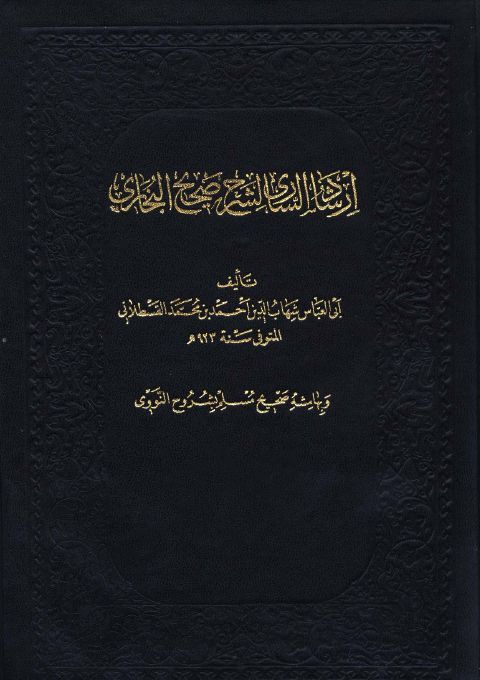

Downloads need an internet connection.
إرشاد الساري لشرح صحيح البخاري وبهامشه شروح مسلم للنووي- ط بولاق
Authors: يحيى بن شرف النووي أحمد بن محمد القسطلاني
Publishers: المطبعة الأميرية
**▫️ العنوان: إرشاد الساري لشرح صحيح البخاري وبهامشه شروح مسلم للنووي- ط بولاق** ▪️ المؤلف: #أحمد_بن_محمد_بن_أبي_بكر_القسطلاني • #يحيى_بن_شرف_النووي ▫️ الناشر: #المطبعة_الأميرية ▪️ تاريخ النشر: 1305هـ 1887م ▫️ بلد النشر: بولاق، #مصر ▪️ الطبعة: 7 ▫️ عدد الأجزاء: 10 ▪️ الصفحات: 4864 ▫️ نوع الوعاء: #كتاب ▪️ التصنيف الرئيسي: #الحديث_وعلومه ▫️ التصنيف الفرعي: #شروحات ۪